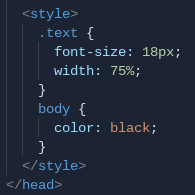

thomas a edison cte high school
web developer academy
10th grade
lab 9
types of CSS
by leah jarvis
inline css
inline css is when you use css properties inside of a non-css (HTML) document. inline css is implemented by using the style property inside of a tag to change the appearance of that one element. an example of this is:
< body style="background-image:url('https://insert file name here.jpg');" >
we can see here that inline css is implemented into the standard < body > tag to change how the body looks by adding a background image. an example of inline css being used to change the appearance of text would be the tag:
< p style="color: white; font-family: 'courier';" >
in this tag, inline css is used to change the appearance of the text by changing by the font & the font color. inline css is typically less popular than other types of css but can be especially helpful if you already have an external stylesheet linked to your document, but just want to change one particular element in one of your webpages.
internal css
internal css is creating a CSS stylesheet inside one HTML document in order to give that one page a unique style. internal css is the same as creating an external stylesheet, except that all the selectors & attributes are added inside of the html document.
internal css is used by adding the style tag inside of the head of the document. within the style tag is where your selectors & attributes changing the appearance of your text will go. an example of how internal css should look in your document is:

in this screenshot, we can see internal css being used by adding a style tag in the head of a document. inside the style tag, css is used to change the font size of the text, the width of the text container, & the color of the body text.
external css
external css is creating a .css file or a stylesheet apart from your other html documents. this stylesheet will define how the attributes of all the websites you apply it to will look. you can add a particular stylesheet to an unlimited amount of html webpages, but you can only add one stylesheet to a particular website (or else they will overlap).
to link an external css stylesheet to an html webpage, you have to add this tag to the head of your document:
we can see here that the 'link rel' attribute is used to specify that the file you are linking is a stylesheet that should be applied to the document. then you specify your stylesheet by typing the exact file name (make sure it knows the connect file path as well by adding ../ to tell the system to look outside of the folder). if done correctly, when you refresh, your page should look completely different: & exactly how you want it to.